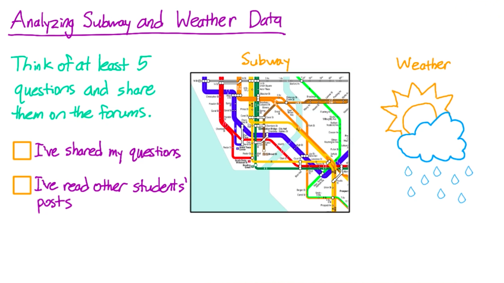

Numpy & Pandas - 第二部分
Back to Home
01. 简介
02. 地铁数据
03. 二维 NumPy 数组
04. NumPy 轴
05. NumPy 和 Pandas 数据类型
06. 访问 DataFrame 元素
07. 将数据加载到 DataFrame 中
08. 计算相关性
09. Pandas 轴名
10. DataFrame 向量化运算
11. DataFrame applymap()
12. DataFrame apply()
13. DataFrame apply() 使用案例 2
14. 向 Series 添加 DataFrame
15. 再次归一化每一列
16. Pandas groupby()
17. 每小时入站和出站数
18. 合并 Pandas DataFrame
19. 使用 DataFrame 绘制图形
20. 三维数据
21. 结论
Back to Home
02. 地铁数据
地铁数据
Question:
Start Quiz:

Solution:
Next Concept